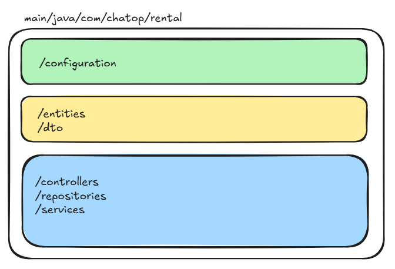

Présentée par Xinhe YU
le 08 novembre 2024
| Endpoint Name | Verb | Path | Verb | Path |
|---|---|---|---|---|
| auth | POST | /auth/register | POST | /auth/login |
| GET | /auth/me | |||
| user | GET | /user/:id | ||
| rentals | GET | /rentals | GET | /rentals/:id |
| POST | /rentals | PUT | /rentals/:id | |
| messages | POST | /messages |
- Framework principal
- connecter + gérer la base de données
- documenter de l'API
- générer JWT (JSON Web Token)
- crypter les mots de passe des utilisateurs
- protéger les informations sensibles pour l'application

Mot-clés : sécurité des données ; gestion des enquêtes et réponses ; workflow ; gestion des
erreurs ; documentations
Points intéressants : compléter l'app avec plus de méthodes ; implémenter l'authentification
par Oauth2.